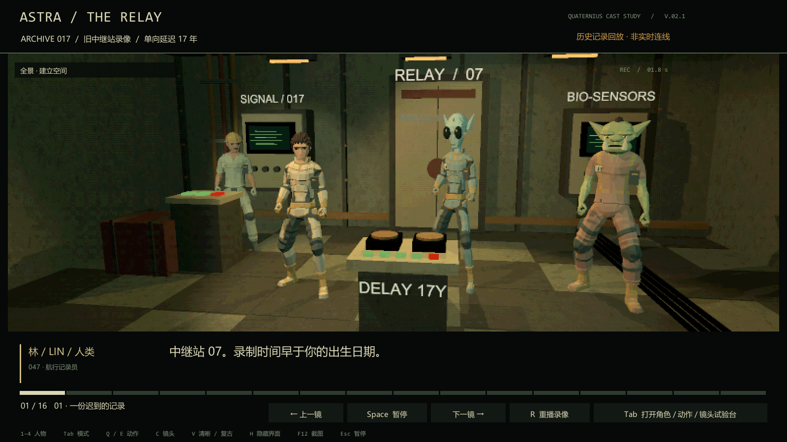
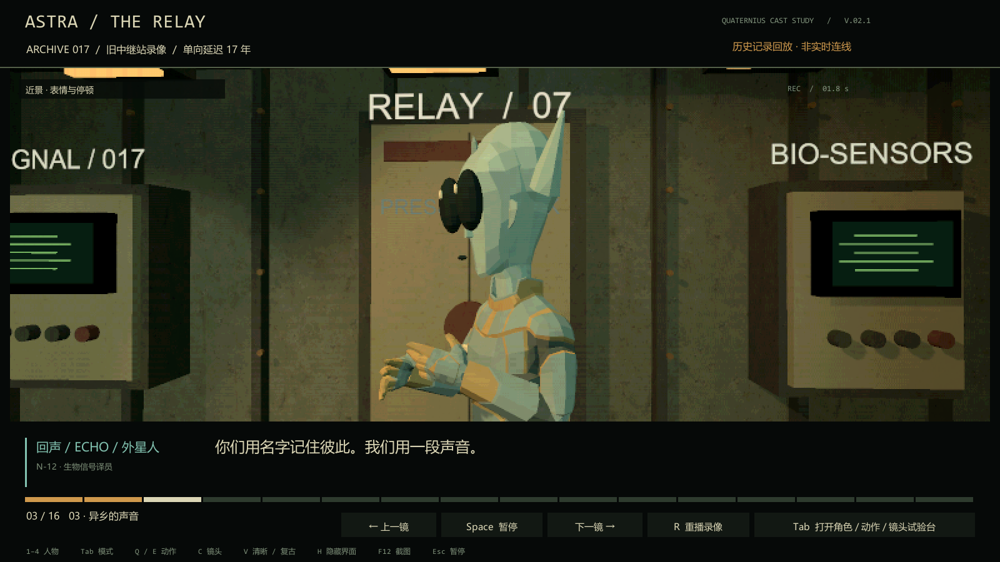
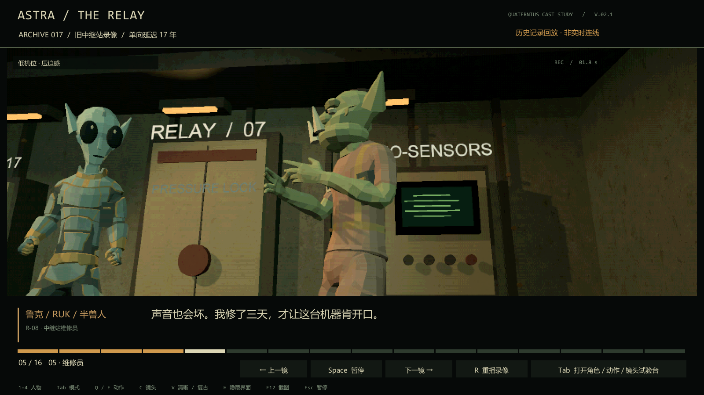
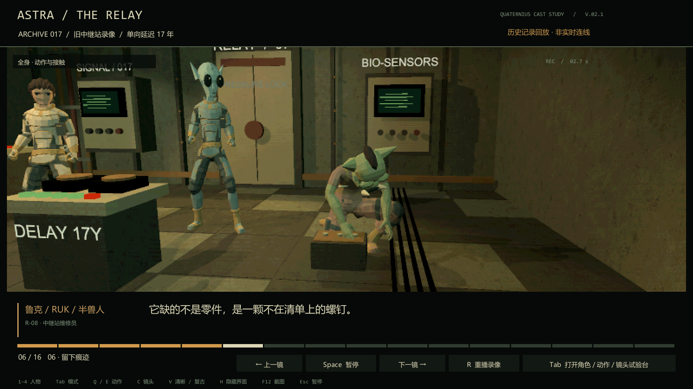
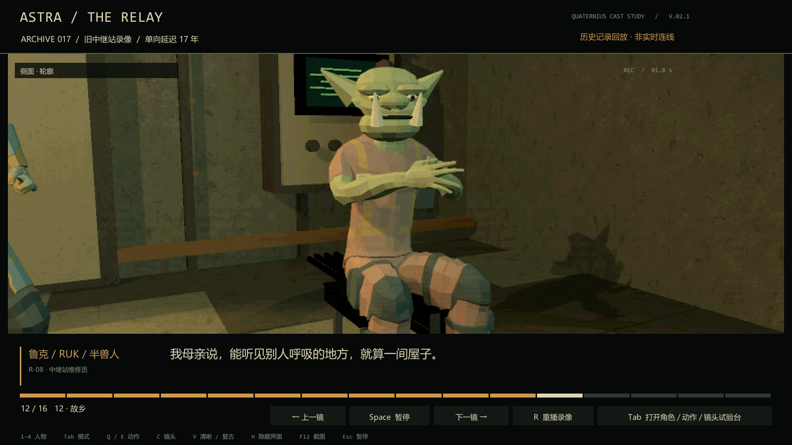
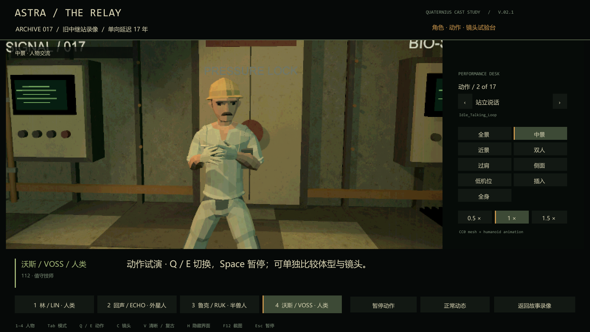

四人 / 中继站全景
外星人 / Blender 头部改造
半兽人 / 低机位
动作 / 跪姿维修
动作 / 坐姿说话
人物、动作、镜头试验台ASTRA · THE RELAY / 演出系统 V2.1
基于 Quaternius CC0 人物与真实骨骼动画制作的独立新版。双击 Launch.cmd 开始播放；完整播放器位于 Build/ASTRA Relay V2.exe，请保留整个 Build 目录。
V2.1 画面修订：修复手指骨骼变形、坐姿头部错误剔除、切镜站位重置、镜头随头骨晃动及试演遮挡。逐镜问题记录见 Docs/04_逐镜复查.md，原始帧和对比见 画面复查.html。
本次变化
- 4 名人物、3 类种族：林和沃斯为人类；回声为外星人；鲁克为半兽人。角色来自 Quaternius 模块化人物，在 Blender 中改造头部、体型、服装和装备，保留真实蒙皮。
- 真实素材动作：导入 Universal Animation Library Standard 的 43 个条目（含 T Pose），试验台开放 17 种动作。故事使用说话、倾听、维修、设备操作、坐下、坐姿交流、起身和行走，并叠加有限幅度的头部反应。
- 9 种镜头、16 个演出节拍：全景、中景、近景、双人、过肩、侧面、低机位、设备插入和跟拍，支持硬切、平滑过渡和缓慢推进。
- 可操作试验台：随时选择人物、动作、镜头和播放速度；暂停、逐镜跳转、清晰／复古画面比较、减弱动态和截图。
这段约 90 秒的旧录像发生在中继站。玩家仍是独处探测舱的观看者；多人交流属于历史影像。外星人、半兽人及中继站故事是本次用户要求的演出探索设定，尚不代表修改了 Astra 正式世界观。
操作
| 操作 |
按键 |
| 暂停 / 继续 |
Space、P 或 Esc |
| 故事 / 试验台 |
Tab |
| 选择四位人物 |
1–4，会进入试验台 |
| 上一个 / 下一个动作 |
Q / E，仅试验台 |
| 下一个镜头 |
C，仅试验台 |
| 上一段 / 下一段故事 |
← / → |
| 重播故事 |
R |
| 清晰 / 复古画面 |
V |
| 隐藏 / 显示界面 |
H |
| 保存截图 |
F12，写入游戏 persistentDataPath/Screenshots |
修改入口
.\Rebuild.ps1
.\Rebuild.ps1 -RegenerateCast
.\Verify.ps1
试验台的单人镜头将角色移至无遮挡站位；双人与过肩只保留当前配对，全景保留四人。返回故事会重建剧情站位。
上一版保留在父目录。Project-Astra 正式项目未因本次演出样板而修改。
V2 演出设计：旧中继站录像
目标和背景
在同一工业舱室语言下，验证人类、外星人和半兽人能否共用动作库，同时通过姿态、视线、节奏和镜头区分性格。延续 Astra 的灰绿钢板、搪瓷、锈蚀、黄铜、模拟设备与长延迟通信。地点设为历史中继站影像，避免把玩家的单人探测舱直接变成多人舰桥。新种族是用户本轮指定的探索内容；种族来源、社会史及其与 AI 的关系均未写入正式设定。
四名角色
| 人物 |
轮廓与修改 |
演出特征 |
| 林 / 人类记录员 |
Quaternius Casual 头 + SpaceSuit 身体；米白旧制服与编号牌 |
面向记录镜头，手势清晰；最后近景承接观看者 |
| 回声 / 外星译员 |
人类底模去除头发、扩大颅部、收窄体型；新加大眼、感知鳍与头部脊线 |
倾头与短暂等待，近景读眼睛，侧面读轮廓 |
| 鲁克 / 半兽人维修员 |
宽肩体型、突出下颌、尖耳、下獠牙、厚眉；工装 + 加固裤腿 |
较重的身体姿态，低机位介绍，维修后坐下再起身 |
| 沃斯 / 人类技师 |
Worker 头 + Farmer 上身 + Worker 裤靴，旧黄铜色安全帽 |
后景值守，操作设备，为场景提供第二层活动 |
不是仅给同一头部换皮肤颜色。非人角色新增几何挂在原有 Head 骨骼，身体比例同时作用于网格和休止骨架，避免只有网格变宽、关节仍留在原位。
动作编排
免费标准包实际含 43 条动画，其中 1 条是 T Pose。试验台选出 17 条可切换动作；故事中优先使用语境明确的说话、维修、操作、坐姿与行走。受击、推移和舞蹈只用于试验台检查较大幅度姿态，不混入正常对话。
每条台词先有短暂起句等待，再逐字显示。说话与倾听分开：反应镜头中的角色播放待机，点头、摇头、偏头和视线是附加层。动画交叉淡化约 0.32 秒；停顿不是每帧都添噪声。暂停同时冻结表演、镜头与字幕时钟。
脚接触、手接触仍需要镜头和道具位置配合。当前支持标准人形重定向和 Unity Foot IK 开关，但没有手部接触 IK。特别是维修和操作动画不能被解释为对任意设备都能自动精确贴合。
镜头语法
| 镜头 |
叙事任务 |
实现注意 |
| 全景 |
建立站位，结束时重看空间 |
保留地面和身体轮廓，不能只展示墙面 |
| 中景 |
读台词与双手动作 |
目标点落在胸腹之间，留出头顶空间 |
| 近景 |
名字、呼吸与最后一句话 |
缓慢推进仅 8 cm；不要让大幅手势遮脸 |
| 双人 |
表达关系与等待 |
中点构图，两人的脸都应能辨认 |
| 过肩 |
从倾听者的位置看说话者 |
检查前景肩膀遮挡，避免相机进入头部 |
| 侧面 |
强化异种／半兽人的轮廓 |
座位变化时重新考虑目标高度 |
| 低机位 |
介绍鲁克的体型 |
避免过度仰视鼻孔和穿帮到天花板 |
| 设备插入 |
提示磁带、延迟与时间 |
暂时离开脸，把声音语境留给字幕 |
| 跟拍 |
承接行走或重心下降 |
相机根据主体位置更新，使用独立时间推进 |
镜头跨较大空间使用硬切；同一角色的邻近镜头可平滑过渡。试验台允许任意组合以暴露问题，并不保证每一种动作与镜头组合都具有叙事合理性。
后续制作取舍
若作为正式剧情系统：为重要台词定制手部动作，做眼睑／嘴部表情形变，增加按角色配置的座椅与接触标记，给动作定义前摇、主段、收势；再加入音频事件和口型。现阶段首先验证现成人物、真实动画重定向和镜头编排是否值得继续投入。
V2 实现与扩展
代码分工
RelayArchive.asset (ArchiveSequence / ArchiveBeat)
↓
ArchiveDirector
↙ ↓ ↘
CastActor ArchiveCamera ArchiveView
Playables 镜头解算 输入按钮/字幕
↓ ↓
Humanoid Camera + ArchiveGrade
ArchiveBuild：离线导入 / 材质 / 场景 / 构建
ArchiveQA：命令行启用的运行验证与实际帧采集
ArchiveSequence 存台词、主体、倾听者、源动作、时长、镜头、视线反应和移动标记，不存运行时状态。Validate() 拦截重复 ID、无效人物索引、错误时长和缺失动作。数据修改保存在 ScriptableObject；场景生成保留已有剧情资产；V2.1 通过 reviewRevision 执行一次已列明的镜头、移动起止点迁移，之后不重复覆盖。
ArchiveDirector 只负责模式、节拍、时钟、站位与各适配器调用。故事按顺序推进；试验台覆盖表演控制。自动切镜保留已经发生的站位移动及动画衔接；手动跳镜会重建该段之前的移动结果，避免从行走切入近景时人物瞬移回原位。后续若接原游戏，只需要将导航／事件触发接到此层；不要让模型组件读任务状态或存档。
Quaternius 动作接入
- 采用官方 Standard 包的 Unity/UAL1_Standard.fbx（不带
_RM 的原地版本）。原包说明明确区分普通版与 baked root motion 版本。
- Unity ModelImporter 使用 Humanoid、Create From This Model、Bake Axis Conversion，Root Motion Node 为
root。模型则显式映射 Head/Neck/Chest/Spine、四肢等骨骼到 Quaternius 模块人物的对应名称。
- 将源 clip 的
Armature| 前缀规范化，保留原 takeName。_Loop 结尾的条目开启循环与循环姿态；根旋转、水平移动与高度 baked into pose。
Animator.applyRootMotion=false。路径移动由节拍 start/end 控制。当前行走是原地动画配合路径位移，不是自动匹配步幅的运动匹配系统，仍需人工校准速度。AnimationClipPlayable → AnimationMixerPlayable → AnimationPlayableOutput → Animator 完成跨角色重定向。四个槽位允许动作切换中再次切换；只保留有限数量，淡出结束销毁不用的节点，OnDestroy 销毁图。- Graph 采用 Manual 更新时间；统一 dt 为零时不采样，暂停保持动作、视线和相机姿态。单次动画到结尾停住，循环动画按时长回绕。试验台中单次动作按 E/Q 或重新选择可重播。
真实素材动画与程序附加反应是两层：每帧先移除上一帧头部修正，再采样动画，然后施加受限的头部视线、点头、摇头或倾头，避免累积旋转。此版没有 AudioSource 语音、音素口型或面部表情蒙皮；字幕不会被误当成精准 lip-sync。
Blender 改造
Tools/build_cast.py 每个角色从原始 Humans_Master_Humanoid.blend 重新开始，筛选四个模块，统一材质命名与配色；外星和半兽人修改头部顶点及面片并追加几何。附件使用原骨架权重，没有每帧跟随贴片。种族缩放同时写进网格顶点与 edit bones。V2.1 先快照所有骨骼的 head/tail/roll 和连接关系，再断开 use_connect，一次性从快照计算新位置，最后恢复几何上仍相接的连接。不能边遍历边修改连接中的关节，否则 Blender 会反向更新父骨尾端，造成重复缩放和反向手指。导出前断言手指长度及方向。原始骨架包含 49 根骨骼，FBX 不导出叶骨和虚构动画；Unity 从独立 UAL 文件得到动画。
手部网格与休止骨骼同步缩至原来的 78%，缓解原素材夸张手掌在近景中的比例。为适配库中手指动作，额外拆分两侧拇指末节，并显式映射十根手指；导出最终为 51 根骨骼。Unity 导入时刷新 SkeletonBone 休止层级，不能沿用新增骨骼前缓存的 HumanDescription，否则 Avatar 会失效。
四个 Source/Astra_*.blend 可直接手工编辑。脚本重建会覆盖这些衍生文件，因此手工美术版本应另存文件并调整导出入口。原始下载文件始终保留，不需要登录或购买就能离线重建。
镜头与显示
ArchiveCamera 将镜头类型转换成位置、目标点和 FOV。跨场景机位采用剪辑硬切；仅同一主体、同一镜头类型且移动小于 0.7 米的重构图允许 smoothstep 插值。取景锚点使用休止身高与该镜头开始时的站位，不直接读取每帧的动态头骨高度；镜头推进与角色动作共享暂停／速度时钟。跟拍每帧更新目标。减弱动态关闭慢推进并缩小微动作，不取消剧情中必须发生的动作。
画面使用宽银幕区域，上下保留清晰 UI。视口与 UI 使用同一 1600×900 等比参考坐标，适配窗口大小。试演模式将三维视口缩至左侧，控制台独占右栏；单人试演使用统一的无遮挡站位，双人和过肩使用独立配对站位，退出后恢复剧情。暂停状态只显示顶栏标记，不覆盖表演画面。ArchiveGrade 在场景渲染后半分辨率采样并应用原 Astra 风格后处理；字幕与按钮不被一起像素化。V 键保留材质，只切换后处理，以便比较。当前镜头是显式参数解算，不依赖 Cinemachine 包。
所有角色 SkinnedMeshRenderer 开启 updateWhenOffscreen，让包围盒随实际蒙皮姿态更新。原 FBX 的站立包围盒会在坐姿近镜中错误地剔除整个头部或面部附件；只设置 Animator AlwaysAnimate 不能修复这个渲染问题。
VisualAudit 用固定 1/30 秒表演步长跑完整故事及源 clip 周期，定期保存真实播放器帧和 CSV，另遍历四名角色的九种镜头。截图黑屏会中止审查，不将未渲染的图片当作有效证据。该模式不代替正常速度下的窗口操作复查。
扩展接口
- 新人物：保证有效 Humanoid Avatar、添加 CastActor 和材质映射；若扩充到四人之外，先移除
actor 0..3 与界面四槽的样板限制。
- 新动作：加入
clips 和 galleryActions；同时给 ArchiveView 添加本地化标签。生产版应将标签改成动作定义数据资产，避免两个数组同步。
- 新镜头：扩展 ShotKind 与 ArchiveCamera；长镜头可改为可编辑轨道资产。生产版需补遮挡检测、视线轴规则、角色身高/坐姿自动适配。
- 交互道具：添加每角色的手／脚目标、接触权重曲线与 Animation Rigging 或 IK 适配器。不要通过修改对话状态机来硬编码某个模型的骨头。
- 集成：此版是独立工程，没有直接修改原 Project-Astra，更没有替换原存档、导航系统或战斗系统。
验收与当前边界
验证方法
V2.1 将功能回归与画面复查分开。功能回归 118 项通过，Windows 构建成功（0 个构建错误），保存 16 张功能检查截图；这些数字不代表演出质量已经完成。完整功能回归执行于最后一次推箱把手几何调整之前；调整后重新构建并完成 985 + 612 张画面采样。随后桌面操作被 Esc 停止，没有再次启动最终包的完整功能回归和人工交互巡检。该检查边界保留在本记录中。
使用 Unity 2022.3.62f1 构建 Windows x64 实际播放器；通过 --archive-qa 运行场景中的真实 Animator / PlayableGraph / Camera，采集 GPU 渲染后的画面，而非把概念图当成运行效果。
最终功能结果以 QA/runtime/runtime-verification.txt 和 QA/build-summary.txt 为准。验证环境与分辨率另记在 QA/runtime/environment.txt。视觉问题及修订见 04_逐镜复查.md，前后对比见根目录 画面复查.html。
画面检查覆盖全部 16 段剧情的起、中、末段与切镜，4 × 17 个动作的多阶段采样，以及 612 个动作／镜头组合中段。最终保存 985 张剧情、动作和镜头检查帧，加上 612 张组合帧。它们是检查采样，不是“每一帧无瑕疵”的保证；人工复查发现的手指变形、坐姿头部丢失、镜头晃动、人物瞬移和遮挡已分别修复。
覆盖内容：
- 4 位角色、3 种种族、有效 Humanoid Avatar；43 条源动画均可作为 humanoid 动画导入。
- 每位角色各采样 17 种试验动作，共 68 种角色／动作组合，检查无非有限蒙皮包围盒及失效骨架。
- 说话动画实际改变手部位置，验证不是只切换 UI 上的动作名称。
- 暂停冻结字幕时钟、骨架与相机；恢复后继续。
- 连续打断动画时 Playables 节点数量保持有界；不会随点击不断增长。
- 9 种镜头完成过渡；故事能够结束、重播；清晰／复古开关、减弱动态能传达至对应模块。
- 16 张实际玩家截图，包括全景、人类说话、外星近景、半兽人低机位、维修、双人、过肩、坐姿、跟拍、试验台与同一帧画风比较。
- 无运行时 Error / Exception。
- 新增四项回归：坐姿蒙皮持续更新；静态近景不跟随头骨晃动；自动切镜保留行走终点；手动跳镜恢复先前走位。
这些是自动化功能检查，加上人工查看生成截图。没有把“自动化通过”当成玩家对角色审美、节奏或所有手脚接触细节的认可；也未宣称每个 UI 按钮经过物理鼠标逐一点击。
看图位置
| 图 |
检查点 |
01_establishing.png |
四人站位、整体材质与场景 |
03_alien_close.png |
外星人的非人轮廓与眼睛 |
05_orc_low_angle.png |
半兽人的下颌、獠牙与低机位 |
06_repair.png |
真实维修动画 |
08_two_shot.png |
双人关系构图 |
10_orc_seated.png |
坐姿说话与镜头高度 |
13_gallery_voss.png |
试验台控件和另一名人类 |
14_alien_retro.png / 15_alien_clear.png |
同一暂停帧的后处理比较 |
16_seat_full_body.png |
座椅、全身和接触位置 |
已知边界
- 本次属于演出与素材接入样板。角色依然能看出 Quaternius 的卡通底模特征，面部没有制作级拓扑、眼睑动画、口型或真人配音。
- 同一标准动作经过重定向，尚未针对外星人／半兽人逐帧重做表演。极端体型、动作混合、手指和衣物接近身体时仍可能出现局部交叉，需要正式动画清理。
- 提供 Foot IK 开关，但没有生产级脚锁、手部接触 IK、自动座椅匹配、动作与路径步幅匹配。试验台新增动作参照道具和手骨挂接的拾取件，但手与物体接触仍较粗糙，不附带完整拾取或维修玩法。
- 当前角色没有模拟眼球追踪，主要通过头部朝向表现视线。没有完整面部表情系统。
- 场景为独立历史录像样板，不读写原游戏存档；新种族设定尚未并入正式世界观。
- 没有引入 Cinemachine 或 Timeline 依赖；镜头由自有脚本解算。试验台采用明确的单人／双人站位和姿态高度适配，没有完整自动遮挡回避或智能摄影。612 组检查可发现明显出框等问题，不能保证每个组合都有剧情价值；例如推箱低机位会自然被箱体遮住身体，维修近景无法同时展示脚部。
- 验证平台为本机 Windows / NVIDIA GPU；不作低配帧率、其他操作系统或无本机中文字库环境的承诺。
重建与修改
Rebuild.ps1 重建场景及播放器；-RegenerateCast 会按脚本覆盖四个衍生 Blend 与 FBX。手工改造版本应另存。原 Quaternius 下载件和许可文件保留在 Source/Downloads，可离线重新生成角色。
Verify.ps1 会打开实际游戏窗口并自动运行验证，写入 QA/runtime 后退出。再次运行覆盖该目录的同名验收输出，不接触原 Project-Astra 的用户数据。
V2.1 逐镜复查与修订
之前的交付没有充分完成画面验收。骨架有效、功能检查通过，并不能说明手部形状、构图、接触和剪辑连续性正确。本次从实际 Windows 播放器重新复查，保留修复前后的原始画面。
打开根目录的 画面复查.html：可以选择 16 段剧情，拖动同段进度对比前后，也可以检查 4 名人物 × 17 个动作 × 9 种镜头的 612 个中段画面。页面中的低帧率回放用于检查，流畅性和节奏应以实际 Demo 为准。
修复的根本问题
| 问题 |
原因 |
修订 |
| 手指拉长、反折，手掌形状错误 |
Blender 修改连接骨骼时，子骨骼头部的移动反过来修改父骨骼尾部，之后再次缩放 |
先保存所有骨骼原始坐标，解除连接，统一计算后恢复连接；对手部权重组采用相同缩放；重新生成四个 Blend 和 FBX |
| 坐下后近景丢失头部或面部附件 |
蒙皮仍按站立姿态的旧包围盒参与剔除 |
演员蒙皮开启 updateWhenOffscreen，避免局部部件被错误剔除；增加回归检查 |
| 对话镜头随着头骨明显摇晃 |
相机直接每帧跟随动画头骨 |
剧情使用站位与静态头高构图，仅保留极小幅度近景推进；试演的非待机动作使用缓动高度补偿 |
| 跨机位转场飞过人物 |
把两个不相邻的摄影位置也做空间插值 |
不同机位直接剪切，只允许同人物同机位的小幅重构图插值 |
| 行走后切镜突然回到原位 |
每个节拍都重置所有人物站位 |
自动播放保留走位；手动跳镜重建此前已完成走位；相同连续动作不重复启动 |
| 试验台角色被其他人或面板挡住 |
沿用剧情站位，控件覆盖渲染画面 |
单人使用独立站位，双人使用统一配对站位；渲染区与控件区分开；非参与者及遮挡道具按镜头隐藏 |
| 暂停和字幕影响检查 |
暂停提示在画面中央，短句逐字出现过慢 |
暂停提示放在顶栏；进入台词后完整显示；暂停或跳镜可立即读完 |
16 段剧情的画面检查
每段检查开头、动作中段、结束和切镜相邻帧；原始检查帧约每 0.27 秒一张，并单独采切镜首帧。缩略图只是导航，原始图为 1600 × 900。
| 段落 |
检查和修订 |
仍需注意 |
| 01 一份迟到的记录 |
重排四人站位及建立镜头，四种人物可辨认 |
当前是简单场景布置 |
| 02 名字 |
修复手部；稳定中景；说话者更明确转向听者 |
手势来自通用源动画 |
| 03 异乡的声音 |
给外星人头部及耳部留余量；近景不追随头骨摇摆 |
尚无口型和眼睑动画 |
| 04 倾听 |
检查前景肩部与主体头部的关系，保持反应镜头 |
反应层主要是头部朝向 |
| 05 维修员 |
半兽人低机位检查獠牙、下颌和手部 |
同一通用说话动作仍有重复感 |
| 06 留下痕迹 |
维修用全身镜头，扩大下方空间并加入维修箱 |
手和工具仍未进行精确接触 IK |
| 07 值守技师 |
增加面部补光；检查手部及操作台关系 |
Interact 是通用操作手势，尚非对齐按钮的专属动画 |
| 08 机器的时间 |
放宽设备特写，下方 DELAY 17Y 标记可见 |
设备反馈仍较简单 |
| 09 两种记忆 |
双人构图检查间距、头顶和朝向 |
视线依靠头部，未实现眼球目标 |
| 10 一个回答 |
稳定人类近景；减小无动机的摄影移动 |
还需要独立面部表演 |
| 11 短暂休息 |
改全身镜头，完整观察坐下轨迹与椅子 |
尚无自动座椅匹配 |
| 12 故乡 |
修复坐姿头部错误剔除，采用适合坐姿的侧面镜头高度 |
身体、座椅接触仍是预设位置 |
| 13 继续工作 |
改全身镜头，检查起身开始和结束 |
通用起身动作未逐帧清理 |
| 14 走向记录 |
缩短路径并降低步行动画速度；相机随根节点跟随 |
仍没有正式步幅匹配和脚锁 |
| 15 给未来的人 |
保留行走终点，避免切镜瞬移 |
口型、配音未制作 |
| 16 空白也是记录 |
根据最终站位另设全景，避免林挡住沃斯 |
结束画面保持静置 |
动作和镜头组合
除剧情外，分别检查四名演员的 17 种动作起、中、末段，并生成 612 个动作与镜头的中段组合。动作试演增加取物台、推箱和维修箱，便于观察动作含义；拾取件通过手骨挂接展示。它们不是完成的交互玩法，也不能代替手部接触清理。
组合矩阵曾发现外星人和半兽人在推移动作近景中低头出框，已扩大活动动作近景的距离与视角，并增加姿态高度适配。双人镜头按人物间距与画面比例估算距离；试演模式的配对站位固定，避免四人原站位中距离过大或相互遮挡。
末轮检查还修复了推箱把手悬空：将握持条直接连接箱体顶缘，并降低高度以减少遮脸。该道具修改后已重新构建、采样；完整功能回归的执行时间和桌面操作停止情况见 03_验收与限制.md。
设备插入镜头的主体是设备，因此不会要求人物头部处于画面内。建立镜头展示空间，全身镜头展示动作；不能把每个组合都视为适合进入最终剪辑的镜头。
证据和复现
QA/visual-review/before-visible/：修复前真实播放器检查帧。QA/visual-review/final/：最终修订版剧情、动作全程及镜头检查帧，含 frames.csv、complete.txt 和 sheets 缩略图。QA/visual-review/matrix/：612 组动作／镜头中段，含构图坐标诊断。坐标诊断只能提示疑点，不能评价演出好坏。QA/runtime/：最终功能回归结果与截图，和上述视觉检查分开记录。ReviewFrames.ps1：重新运行实际播放器采样。需要可见的图形桌面；隐藏窗口可能输出黑图。可用 -Matrix 运行组合检查。
尚未完成的口型、眨眼、配音、专属表演、精确手部接触和脚锁，均保留为下一阶段工作。本次修订解决演示中的明显结构和构图错误，不等于达到《Mouthwashing》或《Arctic Eggs》的制作完成度。
V2 资产出处与许可
本次确实下载并使用了 Quaternius 的人物网格与骨骼动画；不是仅参考风格。所有使用的 Quaternius 文件来自作者公开的免费包，没有购买或使用 Pro / Source 付费动作包。
Ultimate Modular Men / Males
- 作者：Quaternius。
- 官方页面：https://quaternius.com/packs/ultimatemodularcharacters.html
- 作者链接的公共目录：https://drive.google.com/drive/folders/1USAAquX2JJWuA2m6zol0KUkFe3UkZ8zX
- 实际下载：Humanoid Rig → All Together →
Humans_Master.blend，本地保存为 Source/Downloads/Humans_Master_Humanoid.blend。
- 文件 ID：
1lDSKTJX1CR15qo9JAFHFjRFGR7rp8K8D。
- SHA-256：
1c4bd98437d0611be72498e8caf402adbd6f11002b244b35e8d9cc22e6a541bd。
- 随附许可证：
Source/Downloads/Modular_License.txt，CC0 1.0 Universal。
- 使用模块与每角色修改详见
Source/cast_manifest.json 与 Tools/build_cast.py。衍生的外星人及半兽人造型是本任务改造，不能说它们是 Quaternius 原包提供的成品角色。
Universal Animation Library Standard
- 官方页面：https://quaternius.com/packs/universalanimationlibrary.html
- 作者下载页：https://quaternius.itch.io/universal-animation-library
- 实际免费文件：
Universal Animation Library[Standard].zip；本地名 Source/Downloads/UniversalAnimationLibrary_Standard.zip。
- SHA-256：
cc73fc4e495b82958207316596317a3f40b9fa38065bde1027937452da537724。
- Unity 使用：
Unity/UAL1_Standard.fbx（原地动画），复制至 UnityProject/Assets/PerformanceV2/Animations。
- 随附 CC0 License.txt 与 README.txt 保存在解压目录。
- 本次检验实际为 43 个条目，包含 1 个 T Pose；官方完整系列的 120+ 数量不能用来描述免费包中实际交付的动作数量。
- 没有改写源动画曲线；Unity 中执行 Avatar 重定向、循环设置、根动作导入设置和运行时混合。头部微反应与走位由本任务代码添加。
CC0 原文：https://creativecommons.org/publicdomain/zero/1.0/
用户项目及本次内容
- 旧漆贴图
NavalPaint_Albedo.png、WornMetal.shader、Character.shader 与 Grade.shader 来自上一版演出项目及用户已有 Project-Astra 美术代码，按本任务要求复用。原项目的专有内容不因与 CC0 模型放在同一文件夹而变成 CC0。
- 站点环境几何、场景组装、衍生角色修改脚本、台词、UI 与演出控制代码为本任务新增。
- Windows 字体通过本机 Microsoft YaHei / Consolas 动态加载，没有打包分发系统字体。
- Unity Player 及 Mono 等构建依赖由已安装的 Unity 编辑器正常生成，许可属于相应提供者。
- 不包含 Mouthwashing 或 Arctic Eggs 的人物、动作、声音、贴图和台词。
技术参考
下载与验证日期：2026-09-23。